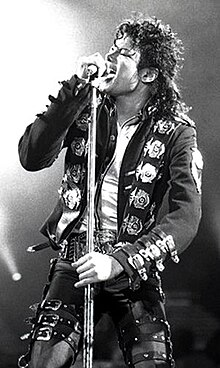

Michael Jackson: The King of Pop

Michael Jackson (1958-2009) was an American singer, songwriter, dancer, and record producer. Often referred to as the "King of Pop", he is regarded as one of the most influential figures in popular culture. Jackson's career as a member of The Jackson 5 made him a global star in his childhood. As a solo artist, his music videos, such as "Thriller" and "Billie Jean", are credited with transforming the medium into an art form and popular culture force.
Awards and Honors
Michael Jackson has received numerous awards and honors throughout his career, including:
- 13 Grammy Awards
- 26 American Music Awards
- Multiple Guinness World Records
- Inducted into the Rock and Roll Hall of Fame twice
- Humanitarian awards for his contributions to charity


About Michael Jackson
Michael Joseph Jackson was born on August 29, 1958, in Gary, Indiana. He was the seventh of nine children in the Jackson family. His talent was evident from a young age, and he began performing with his brothers in the Jackson 5. His solo career skyrocketed in the 1980s, and he became a cultural icon.
Known for his unique voice, innovative music videos, and groundbreaking dance moves like the moonwalk, Michael Jackson's impact on music, dance, and fashion is unparalleled.
Music and Discography
Michael Jackson's discography includes some of the best-selling albums of all time, such as:
- Thriller (1982) – The best-selling album of all time with iconic hits like "Thriller", "Billie Jean", and "Beat It".
- Bad (1987) – Featured hits like "Bad", "Smooth Criminal", and "The Way You Make Me Feel".
- Dangerous (1991) – Known for tracks like "Black or White", "Remember the Time", and "In the Closet".
- HIStory (1995) – A mix of new songs and greatest hits, featuring "Scream" and "You Are Not Alone".